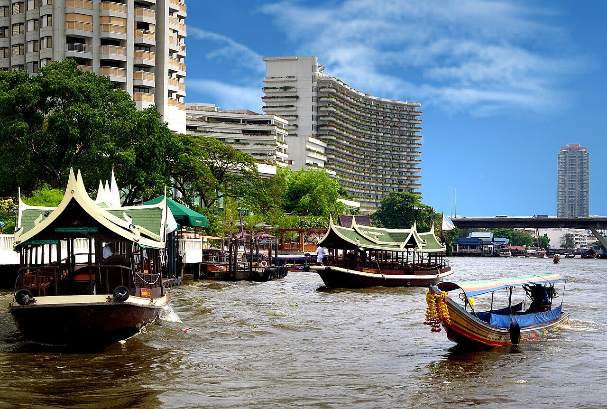

ทำไมต้องไปเช้า และต้องมีวันที่แห้ง
บางกะเจ้าไม่มีร่มกว้างอย่างในเมือง ทางยกระดับส่วนใหญ่อยู่กลางสวนที่แดดลงตรง ก่อนสิบโมงยังเย็นและมีนกให้ดูในสวน หลังเที่ยงร้อนจนปั่นไม่สนุก ส่วนเรื่องฝน ทางปูนแคบกว้างราวหนึ่งเมตร หลายช่วงไม่มีราวกั้นและมีตะไคร่ เปียกแล้วลื่น ถ้าพยากรณ์บอกว่าฝนตกตอนเช้าให้เลื่อนวัน ส่วนตลาดน้ำบางน้ำผึ้งเปิดเฉพาะเสาร์-อาทิตย์ ถ้าอยากได้ครบทั้งสวนและตลาดให้เลือกวันหยุด ถ้ามาวันธรรมดาก็ยังคุ้ม แค่ได้ความเงียบแทนตลาด
เส้นทาง — จากที่พักถึงสวนศรีนครเขื่อนขันธ์และตลาดน้ำ แล้วกลับก่อนบ่าย
- 08:00 — Grab จากที่พักไปท่าเรือวัดคลองเตยนอก (~30–40 นาที) ปักหมุด “ท่าเรือวัดคลองเตยนอก” หรือ “Wat Khlong Toei Nok Pier” เส้นทางข้ามแม่น้ำไปฝั่งคลองเตย เช้าวันหยุดรถไม่ติด วันธรรมดาเผื่อเวลาเพิ่ม คนขับบางคนไม่รู้จักท่านี้ ให้เปิดแผนที่ในแอปให้ดู
- 08:40 — เรือข้ามฟากไปฝั่งบางกะเจ้า (~5 นาที) แล้วเช่าจักรยาน ลงเรือข้ามฟากที่ท่าวัดคลองเตยนอก ค่าเรือหลักสิบบาทตามป้าย จักรยานขึ้นเรือได้ ถึงฝั่งบางกะเจ้าแล้วจะเห็นร้านเช่าจักรยานรอบท่าเรือ เลือกคันที่เบรกทั้งสองข้างใช้ได้และเบาะปรับได้ ถามร้านขอแผนที่ทางปั่น ร้านส่วนใหญ่มีแผ่นพับให้ เช่าแบบครึ่งวันพอ
- 09:00 — ปั่นทางยกระดับผ่านสวนไปสวนศรีนครเขื่อนขันธ์ (~30 นาที) ตามป้ายจักรยานไปสวนสาธารณะและสวนพฤกษศาสตร์ศรีนครเขื่อนขันธ์ ทางช่วงนี้ส่วนใหญ่เป็นทางปูนยกระดับผ่านสวนมะพร้าวและร่องน้ำ กว้างพอให้สวนกันได้แบบชะลอ ปั่นช้า กดกริ่งก่อนโค้ง และถ้ามีคนเดินสวนมาให้หยุดชิดข้าง ช่วงที่ไม่มีราวกั้นถ้าไม่มั่นใจให้ลงจูง ไม่มีใครว่า
- 09:30 — สวนศรีนครเขื่อนขันธ์: บึงน้ำ ทางเดินในป่า และหอดูนก (~45 นาที) สวนใหญ่ที่มีบึงน้ำกลาง ทางเดินไม้ใต้ร่มไม้ และหอสูงให้ขึ้นไปมองเรือนยอดไม้กับตึกในเมืองฝั่งตรงข้าม ช่วงเช้าเป็นเวลาที่เห็นนกเยอะที่สุด จอดจักรยานในจุดที่กำหนดแล้วเดินชมด้านใน มีห้องน้ำและที่นั่งพัก เติมน้ำตรงนี้ก่อนปั่นต่อ
- 10:30 — ตลาดน้ำบางน้ำผึ้ง (เสาร์-อาทิตย์) หรือปั่นวนสวน (วันธรรมดา) (~1 ชั่วโมง) วันเสาร์-อาทิตย์ปั่นต่อไปตลาดน้ำบางน้ำผึ้ง ตลาดชุมชนริมคลองที่ขายอาหาร ขนม และของจากสวนในพื้นที่ กินมื้อสายที่นี่ได้ ตลาดคนเยอะช่วงสาย จอดจักรยานด้านนอกแล้วเดินเข้า วันธรรมดาตลาดไม่เปิด ให้ใช้เวลานี้ปั่นวนทางยกระดับเส้นอื่นตามแผนที่ หรือนั่งพักริมร่องน้ำแทน
- 12:00 — ปั่นกลับท่าเรือ คืนจักรยาน ข้ามเรือ แล้ว Grab กลับที่พัก (~1 ชั่วโมง 15 นาที) ปั่นกลับท่าเรือตามป้าย คืนจักรยานแล้วข้ามเรือกลับท่าวัดคลองเตยนอก เรียก Grab กลับคลองสาน ถึงที่พักราว 13:30 ทันพักกลางวันก่อนแดดบ่าย ถ้ากลับหลัง 18:00 เป็นเช็คอินด้วยตัวเอง เราส่งวิธีเข้าห้องให้ทาง LINE หรือ WhatsApp
ภาพจากเส้นทาง

ภาพประกอบ · Wikimedia Commons · เครดิตรูป
ความปลอดภัยและทริคจากเรา
- ทางยกระดับคือจุดที่ต้องระวังที่สุด: กว้างราวหนึ่งเมตร บางช่วงไม่มีราว และมีมอเตอร์ไซค์ชาวบ้านใช้ร่วม ปั่นช้า มองไกล ๆ ก่อนถึงโค้ง และอย่าปั่นเรียงคู่ ถ้าล้อตกขอบให้ปล่อยจักรยานแล้วเอาตัวรอดก่อน เด็กที่ยังปั่นไม่คล่องควรนั่งเบาะหลังหรือเดินจูงในช่วงแคบ
- ของที่ต้องพก: น้ำคนละขวด ครีมกันแดด หมวก และยากันยุง โดยเฉพาะในสวนช่วงเช้า เงินสดใบเล็กสำหรับเรือ ค่าเช่าจักรยาน และตลาด ร้านเช่าบางร้านขอบัตรหรือเงินมัดจำ ถามก่อนรับรถ
- ปั่นไม่เป็นก็ยังไปได้: สวนศรีนครเขื่อนขันธ์เดินได้ทั้งสวน และร้านรอบท่าเรือบางร้านมีมอเตอร์ไซค์รับจ้างพาไปสวนหรือตลาด ถ้าไม่สะดวกปั่น ให้เลือกไปแค่สวนแล้วกลับ ใช้เวลาน้อยลงและเหนื่อยน้อยกว่า
- งบประมาณทั้งเส้น: Grab ไป-กลับสองเที่ยว ค่าเรือข้ามฟากไป-กลับตามป้าย ค่าเช่าจักรยานครึ่งวันตามร้าน และมื้อสายที่ตลาดราคาตลาดชุมชน หารกันหลายคนแล้ว Grab คุ้มขึ้นมาก เราไม่พิมพ์ราคาเช่าเพราะแต่ละร้านต่างกัน
- อย่าอยู่จนมืด: ทางยกระดับในสวนไม่มีไฟส่องหลายช่วง และเรือข้ามฟากไม่ได้วิ่งดึก ถ้าอยากอยู่นาน ให้วางแผนกลับถึงท่าเรือก่อนพระอาทิตย์ตกอย่างน้อยหนึ่งชั่วโมง ถามรอบเรือเที่ยวสุดท้ายที่ท่าตอนขาไป
ถามบ่อย
ต่างจากปั่นจักรยานฝั่งธนฯ ยังไง
ปั่นจักรยานฝั่งธนฯ เป็นเส้นในตรอกซอยและวัดริมน้ำใกล้ที่พัก ต้องจัดจักรยานเองล่วงหน้าแต่ไม่ต้องนั่งรถ ส่วนบางกะเจ้าต้องนั่งรถไปราวครึ่งชั่วโมงและข้ามเรือ แต่ได้สวน ทางยกระดับ และความเงียบที่ในเมืองไม่มี มีจักรยานเช่าพร้อมที่ท่า ถ้ามีเวลาครึ่งวันเดียวและอยากได้สีเขียว เลือกบางกะเจ้า
ไปวันธรรมดาคุ้มไหม
คุ้ม สวนศรีนครเขื่อนขันธ์และทางยกระดับเปิดทุกวัน วันธรรมดาคนน้อยกว่ามาก ปั่นสบายกว่า ที่ขาดไปคือตลาดน้ำบางน้ำผึ้งซึ่งเปิดเฉพาะเสาร์-อาทิตย์ ถ้ามาวันธรรมดาให้กินมื้อสายจากร้านริมทางหรือร้านแถวท่าเรือแทน
ไปเรือจากท่าใกล้ที่พักได้ไหม ไม่ต้องนั่งรถ
ยังไม่มีเรือประจำทางสายตรงจากท่าใกล้ที่พักไปบางกะเจ้าที่เราแนะนำได้ทุกวัน เรือด่วนเจ้าพระยาไม่ได้จอดฝั่งบางกะเจ้า และตอนนี้วิ่งเฉพาะวันธรรมดา ทางที่ง่ายและเดาเวลาได้ที่สุดคือ Grab ไปท่าวัดคลองเตยนอกแล้วข้ามเรือข้ามฟาก ถ้ามีเรือเหมาลำหรือทัวร์ที่สนใจ ทักถามเราได้
ไกด์ที่เกี่ยวกัน

จุดในเส้นทางนี้บน Google Maps
กดชื่อสถานที่เพื่อเปิดหมุดใน Google Maps — ใช้ชื่อภาษาอังกฤษแบบที่ Google ค้นเจอ
เปิดเส้นทางทั้งหมดจากที่พัก →* ค่าเรือ ค่าเช่าจักรยาน เวลาเปิดสวนและตลาด และรอบเรือข้ามฟากเปลี่ยนได้ ระยะปั่นและเวลาเดินทางเป็นค่าประมาณ เช็กป้ายที่ท่าเรือหรือถามเราก่อนออกจากที่พัก
เขียนโดยทีม House of Happiness · ปรับปรุงล่าสุด